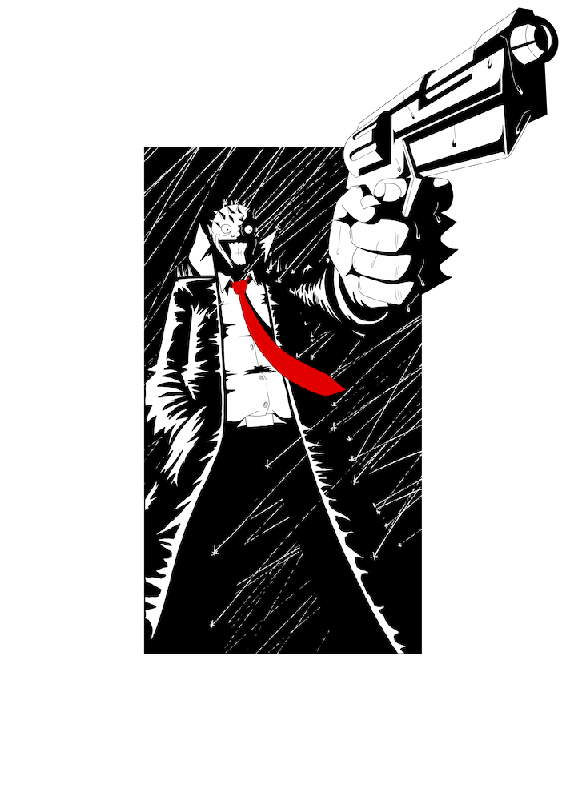

Harold
A gifted, unorthodox detective turned insane vigilante.
Previously a lumminary for the police department with a lonely private life.
During an experiment to recreate his favourite pepper sauce
he accidentally uses a new experimental opium flower instead of regular peppers.
This turns him insane and to a path of revenge against the local cartel.